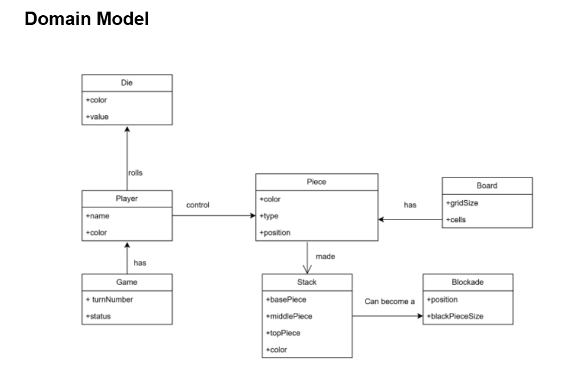
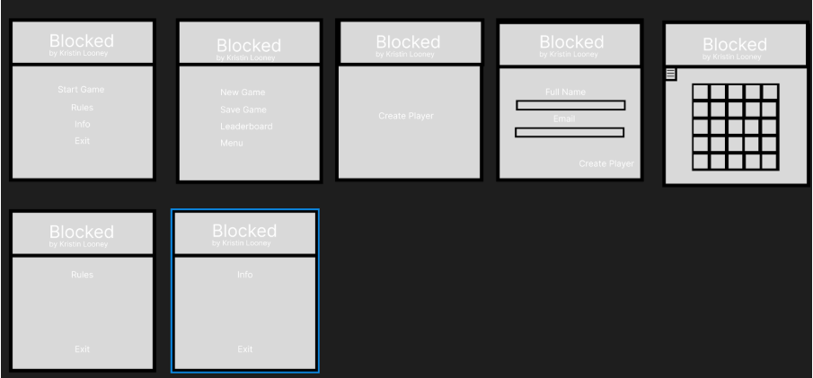
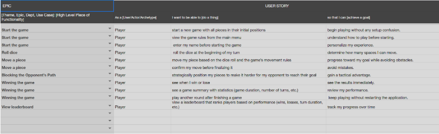
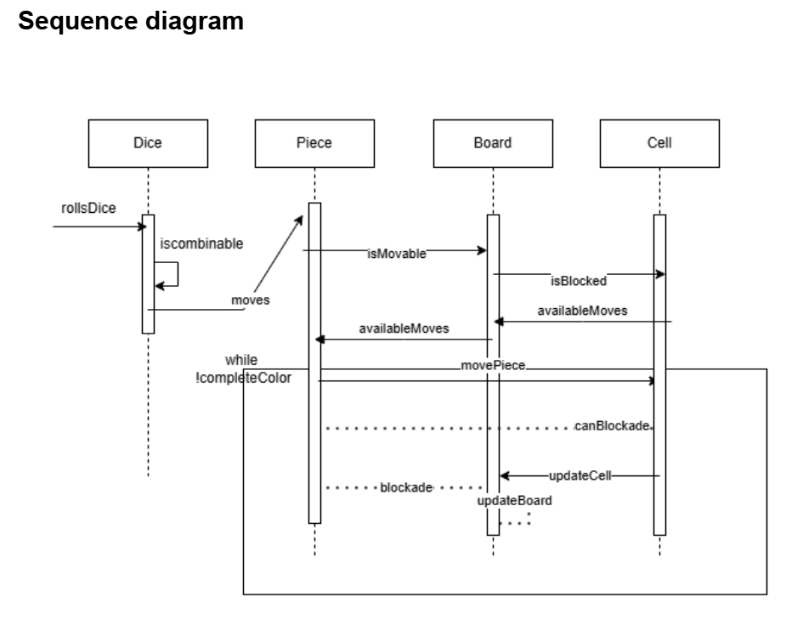
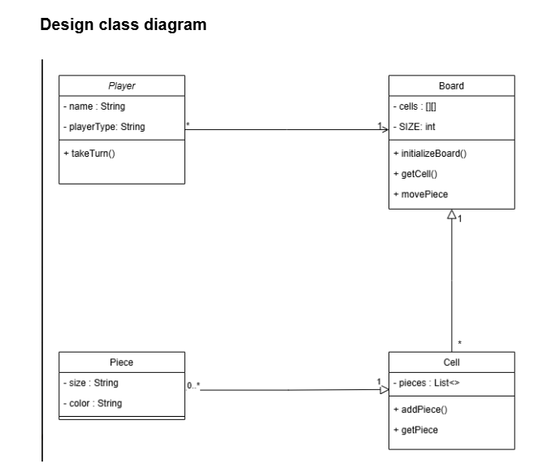
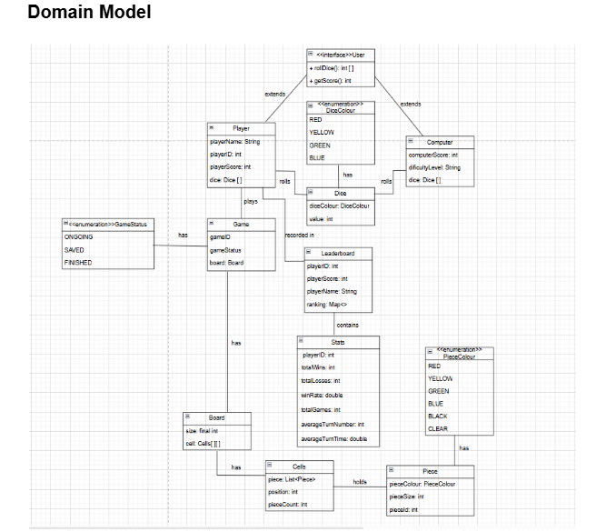
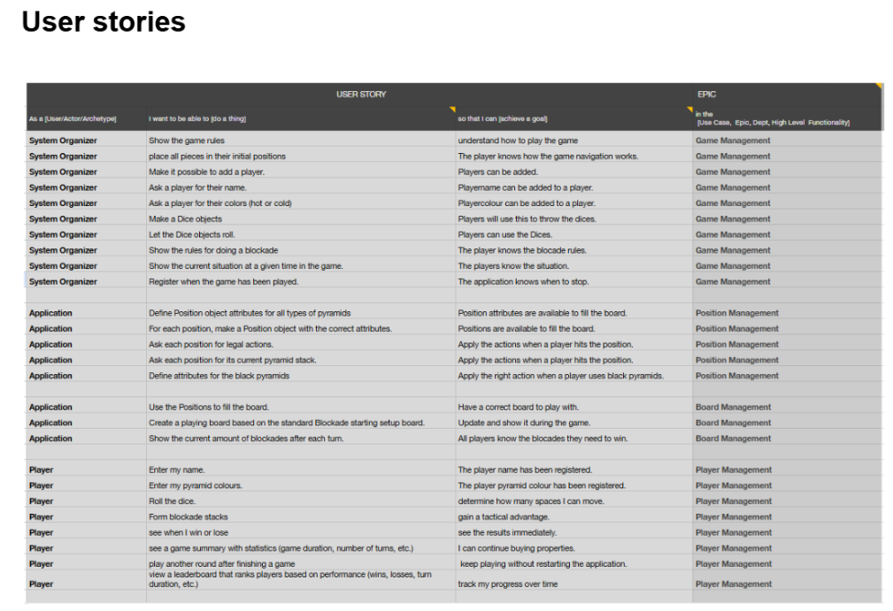
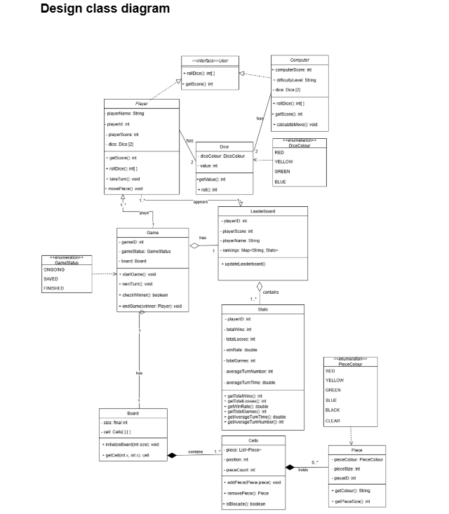

Sprint 1 Milestones
SE #1: Focusing on Analysis
1. Domain Model - Attiqa
2. Wireframes (Figma) - Hildo
3. User Stories - Mira
User stories were written using the template and sorted by priority. Examples:
4. Summary of Work
The team established a strong foundation by producing key artifacts to guide design and implementation. These include a solid domain model, interactive wireframes in Figma, prioritized user stories, and early feedback alignment on gameplay flow.
SE #2: Refined Analysis + Design
1. Sequence Diagram - Daniel
2. Design Class Diagram (DCD) - Mira
3. Design Summary
We applied GRASP principles in designing our class structure: Controller (Game), Creator (Board), and Information Expert (Leaderboard). Our Presenter-first sequence established clear interaction flow between UI and logic components.
SE #3: Final Version – Analysis, Design & Code
1. Final Domain Model - Daniel
2. Final Wireframes - Hildo
3. Final User Stories - Mira
4. Sequence Diagram - Daniel
5. Final Design Class Diagram - Mira
6. Java Code Implementation, GRASP & Design Principles
We documented our use of GRASP patterns:
- Information Expert – Board manages cells and piece logic
- Creator – Game creates players, Board creates cells
- Controller – Game handles flow and turn transitions
- Low Coupling – Player is abstracted via an interface
- High Cohesion – Each class has one focused responsibility
INFRA #1: Linux Server – Accounts & SSH - Daniel
We set up our team’s Linux server with user accounts, group management, sudo access, and secure SSH login using key-based authentication. The initial team account was removed after validation.
Accounts & Permissions
- Created user accounts:
attiqa_maryam,daniel_nedyalkov,hildo_araujo,mira_peeva - Assigned users to group
project - Added sudo access via custom file in
/etc/sudoers.d
SSH Configuration
- Generated
ed25519key pairs per user - Configured SSH login using public/private keys
- Disabled password login by editing
sshd_config
Testing Summary
- ✅ SSH login via key: OK
- ✅ Group membership: OK
- ✅ Sudo access: OK
- ❌ Login with team account: blocked as expected
INFRA #2: PostgreSQL Database Setup - Daniel, Attiqa
We installed and configured a PostgreSQL database server, secured remote access, created project-specific users and databases, and verified connectivity from local machines and Java apps.
Installation & Configuration
- Installed PostgreSQL using
dnfand initialized the DB - Enabled and started PostgreSQL service on boot
- Configured
postgresql.confandpg_hba.conffor remote access - Set firewall rules for port
5432
Database & User Setup
- Created user
gamewith secure password - Created database
gameand granted full privileges - Changed default
postgrespassword
Testing Summary
- ✅ DB is listening on
5432 - ✅ Connection allowed from external IPs
- ✅ Login to DB with
game: OK - ✅ Java connection in IntelliJ: OK
- ❌ Login with default
postgresaccount: blocked
INFRA #3: Network Design – Packet Tracer Simulation - Hildo, Mira
We designed and tested a simulated network topology using Cisco Packet Tracer. It includes two team PCs, our server, a friendly team’s server, a router, and switches. The simulation validates full connectivity and IP configuration between all nodes.
Network Configuration
- Router: Cisco 2911 with 3
GigabitEthernetinterfaces - Two switches (Cisco 2960), two PCs, two servers
- Separate subnets for PCs and servers, connected through router
- Open port
5432on both servers (PostgreSQL)
IP Addressing Overview
- PC1: 10.108.107.98 /21
- PC2: 10.108.107.252 /21
- Our server: 10.134.178.37 /21
- Friendly server: 10.134.178.36 /21
- Router: 10.108.107.1 and 10.134.178.1
Testing Summary
- ✅ PC to PC ping: successful
- ✅ PC to server ping: successful
- ✅ Packet Tracer simulation tested and documented with screenshots
DATA & AI #1: Game Statistics Page Design - Mira, Hildo
We designed the post-game statistics screen and leaderboard layout. This deliverable focused on sketching out the structure and data visualizations that will be shown after a game ends.
Game Statistics Page
- Displays the winner and total play time
- Shows number of turns, average turn duration, and score per player
- Includes a visual breakdown of move durations with outlier detection
Leaderboard Screen
- Player rank, name, games played, wins/losses
- Win percentage, average moves per game, and average turn duration
- Sortable by any field (e.g. by score, win rate, speed)
Graphs & Tables
- Bar chart showing duration of each move per player
- Highlighted outliers based on dataset comparison
- Leaderboard table designed with example data
Note: Current wireframes do not yet reflect the final game UI, but focus on capturing required data components and layout logic. These will be aligned with the game style in future iterations.
DATA & AI #2: Database Design
We designed an initial relational database schema to support player tracking, game statistics, and leaderboard functionality. The deliverable included a full ERD, a data dictionary, and example data tables for all entities.
Entity Relationship Diagram (ERD) - Attiqa, Mira
- Core Tables: Player, Game, Board, Piece
- Relationships:
- Player → Game (PlayerID)
- Game → Board and Piece (GameID)
- Piece → Board (CellID)
Data Dictionary - Mira
- Every table includes field descriptions and data types
- Relationship explanations are provided between all linked entities
Example Data - Mira
- Populated tables for Player, Game, Board, and Piece
- Consistent keys and representative values to cover multiple scenarios
Note: While this schema reflects our early design, the current implementation has evolved. The data model will be revised to align with the final game logic and statistics tracking features.
DATA & AI #3: PostgreSQL Database Implementation
We created a PostgreSQL database on our remote server to support statistics, leaderboard functionality, and game data storage. This setup includes schema creation scripts, example data insertion, and working remote access credentials for testing.
Database Setup - Daniel, Hildo
- 🗄️ Host:
10.134.178.37 - 🔐 Username:
game - 🔑 Password:
7sur7 - 📡 Port:
5432 - 📁 Database:
game
Schema Design - Attiqa
- Tables created:
PLAYERS,GAMES,BOARDS,PIECES - Includes primary and foreign keys with cascade rules
- Supports storing game outcomes, board state, and piece details
Example Data Inserted - Mira
- 4 players with different scores and emails
- 3 sample games with varying completion status
- Board coordinates and placed pieces initialized
Note: This schema and test data were created early in development. Our current game implementation has since evolved, and the live database structure will be updated to reflect final design choices.